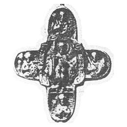
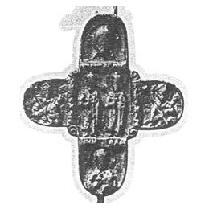

Catalog › CE-0126 · KHA1900-256
Cruce-encolpion de bronz cu războinic (Sf. Vladimir?) și Sf. Boris și Gleb pe revers
XIII в. (1201–1300) · Sahnovka (Сахновка), ținutul Kaniv, gubernia Kiev, Ucraina · Colecția B. I. și V. N. Khanenko, Kiev, inv. nr. 256–257 (numerotarea colecției Khanenko)
double-sided reliquary cross (enkolpion), bronz; XIII в. (1201–1300); found at Sahnovka (Сахновка), ținutul Kaniv, gubernia Kiev, Ucraina; kept at Colecția B. I. și V. N. Khanenko, Kiev.




Identificare
- Categorie
- Encolpion bivalv (relicvar)
- Material
- Bronz
- Tehnică
- Turnare în relief
Iconografie
- Avers
- Sfinți militari; Sf. Arhanghel Mihail; Sf. Nicolae
- Descriere avers
- Pe față, în mijloc, un războinic cu suliță și scut în mâini, presupus Sf. Vladimir; pe cele trei capete de sus, câte un arhanghel (Mihail, Gavriil și Sihail), iar pe cel de jos Sf. Nicolae.
- Revers
- Sf. Boris și Gleb; Sf. Arhanghel Mihail; Sf. Nicolae
- Descriere revers
- Pe revers, în mijloc, Sf. Boris și Gleb; deasupra lor, pe capătul de sus, Mântuitorul nefăcut de mână; pe capetele laterale doi arhangheli, Mihail și Gavriil; pe capătul de jos Sf. Nicolae; pe laturile medalioanelor centrale, inscripții referitoare la reprezentările laterale.
Datare și atribuire
- Datare
- XIII в. (1201–1300)
- Centru
- Necunoscut
Descoperire
- Localitate
- Sahnovka (Сахновка)
- Regiune
- ținutul Kaniv, gubernia Kiev
- Țară
- Ucraina
- Context
- Necunoscut
- Coordonate
- 49.5137° N, 31.4410° E
- Precizia locului
- Doar localitatea
Păstrare și referințe
- Colecție
- Colecția B. I. și V. N. Khanenko, Kiev
- Nr. inventar
- nr. 256–257 (numerotarea colecției Khanenko)
- Bibliografie
- B. I. și V. N. Khanenko, Древности русскія. Кресты и образки, вып. II (Собраніе Б. И. и В. Н. Ханенко), Kiev, 1900 [Khanenko 1900], cat. nr. 256–257, Tabl. XXII, reprodusă la Табл. XXII, fig. 256, 257 (planșa de la p. 23 a PDF-ului).
- Figura
- Табл. XXII, fig. 256, 257
- Planșe
- Khanenko 1900, Табл. XXII (planșă fără paginație tipărită; p. 23 în PDF)
- Observații
- Datare după Khanenko: XIII в. Capete rotunjite, reprezentări turnate. Fața este, după sursă, identică cu cea a encolpionului de la nr. 96–97 din fasciculul I (Khanenko, vol. I), spatele diferă. Numerele 256 și 257 corespund celor două fețe. Coordonate: ale localității (aproximative), nu date în sursă.
Citare: Corpus Encolpiorum, CE-0126, Cruce-encolpion de bronz cu războinic (Sf. Vladimir?) și Sf. Boris și Gleb pe revers, https://vitaliejosanu1979-ux.github.io/primul-meu-proiect/piese/KHA1900-256/ (accesat 2026-10-17).